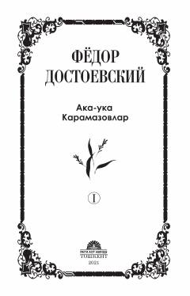

AKInsoniyatning axloqiy va falsafiy muammolariga bag'ishlangan jahon adabiyoti durdonalari.
Fedor Dostoevskiyning so'nggi va eng yirik asarlaridan biri bo'lgan ushbu roman insoniyatning axloqiy, diniy va falsafiy muammolarini chuqur ochib beradi. Asarda uch akaukaning taqdiri va murakkab ruhiy kechinmalari orqali ezgulik va yovuzlik, iymon va imensizlik kabi abadiy mavzular talqin etilgan.